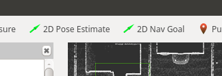

Carla 生成对象¶
carla_spawn_objects 包 用于生成参与者（车辆、传感器、行人）并将传感器附加到它们上。
配置和传感器设置 ¶
对象及其附加传感器通过.json文件定义。该文件的默认位置在carla_spawn_objects/config/objects.json. 要更改位置，请在启动包时通过私有 ROS 参数 objects_definition_file 传递文件路径：
# ROS 1
roslaunch carla_spawn_objects carla_spawn_objects.launch objects_definition_file:=path/to/objects.json
# ROS 2
ros2 launch carla_spawn_objects carla_spawn_objects.launch.py objects_definition_file:=path/to/objects.json
创建配置 ¶
您可以在 ros-bridge repository 存储库中找到示例，并按照此大纲创建您自己的配置和传感器设置：
{
"objects":
[
{
"type": "<SENSOR-TYPE>",
"id": "<NAME>",
"spawn_point": {"x": 0.0, "y": 0.0, "z": 0.0, "roll": 0.0, "pitch": 0.0, "yaw": 0.0},
<ADDITIONAL-SENSOR-ATTRIBUTES>
},
{
"type": "<VEHICLE-TYPE>",
"id": "<VEHICLE-NAME>",
"spawn_point": {"x": -11.1, "y": 138.5, "z": 0.2, "roll": 0.0, "pitch": 0.0, "yaw": -178.7},
"sensors":
[
<SENSORS-TO-ATTACH-TO-VEHICLE>
]
}
...
]
}
!!! 笔记 请记住，直接定义位置时，ROS 使用 右手系统 。
所有传感器属性均按照 蓝图库 中的描述进行定义。
生成车辆 ¶
- 如果没有定义特定的生成点，车辆将在随机位置生成。
-
要定义车辆生成的位置，有两种选择：
-
将所需位置传递给 ROS 参数
spawn_point_<VEHICLE-NAME>。<VEHICLE-NAME>将是您在.json文件中提供的车辆id：# ROS 1 roslaunch carla_spawn_objects carla_spawn_objects.launch spawn_point_<VEHICLE-NAME>:=x,y,z,roll,pitch,yaw # ROS 2 ros2 launch carla_spawn_objects carla_spawn_objects.launch.py spawn_point_<VEHICLE-NAME>:=x,y,z,roll,pitch,yaw -
直接在
.json文件中定义初始位置：{ "type": "vehicle.*", "id": "ego_vehicle", "spawn_point": {"x": -11.1, "y": 138.5, "z": 0.2, "roll": 0.0, "pitch": 0.0, "yaw": -178.7}, }
-
车辆再生成 ¶
通过发布到主题/carla/<ROLE NAME>/<CONTROLLER_ID>/initialpose，车辆可以在模拟期间重生到不同的位置。要使用此功能：
-
将
actor.pseudo.control伪参与者附加到.json文件中的车辆。它应该与用于发布到主题的<CONTROLLER_ID>值具有相同的id值：{ "type": "vehicle.*", "id": "ego_vehicle", "sensors": [ { "type": "actor.pseudo.control", "id": "control" } ] } -
启动
set_inital_pose节点，将<CONTROLLER_ID>作为参数传递给 ROS 参数controller_id（默认 = 'control'）：roslaunch carla_spawn_objects set_initial_pose.launch controller_id:=<CONTROLLER_ID> -
发布消息以设置新位置的首选方法是使用 RVIZ 界面中提供的 2D Pose Estimate 按钮。然后，您可以单击地图的视口以在该位置重生。这将删除当前
ego_vehicle对象并在指定位置重新生成它。

生成传感器 ¶
- 传感器的初始位置应直接在
.json文件中定义，如上面的车辆所示。 - 连接到车辆的传感器的生成点被认为是相对于车辆的。
将传感器安装到现有车辆上 ¶
传感器可以连接到现有的车辆上。为此：
-
在
.json文件中定义伪传感器sensor.pseudo.actor_list。这将允许访问现有参与者的列表。... { "type": "sensor.pseudo.actor_list", "id": "actor_list" }, -
根据需要定义其余传感器。
- 启动节点并将
spawn_sensors_only参数设置为 True。这将检查与文件中指定的参与者相同id和type的参与者是否已处于活动状态，如果是，则将传感器附加到该参与者。# ROS 1 roslaunch carla_spawn_objects carla_spawn_objects.launch spawn_sensors_only:=True # ROS 2 ros2 launch carla_spawn_objects carla_spawn_objects.launch.py spawn_sensors_only:=True